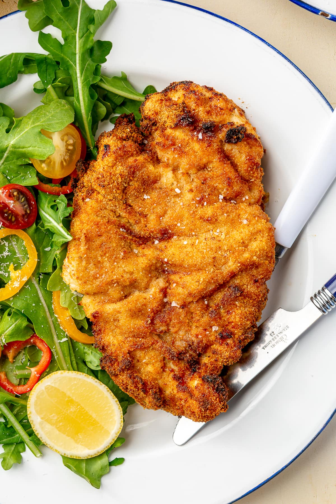

Air Fryer Cutlets

Ingredients
- 2 8-oz boneless skinless chicken breasts, trimmed
- 1/2 teaspoon kosher salt
- 1/2 teaspoon garlic powder
- 1/4 cup Italian dressing
- 3/4 cup seasoned whole wheat breadcrumbs, homemade or store bought
- 2 tablespoons grated Parmesan cheese, or Romano cheese
- 1 teaspoon dry Italian seasoning
- 1 large egg, beaten
- olive oil spray
Steps
- Slice the chicken breasts in half lengthwise to make 4 cutlets. Pound to make 1/4 inch thick.
- In a shallow bowl, season with salt, garlic powder, Italian seasoning and marinade with Italian dressing at least 1 hour (the longer the better).
- Combine breadcrumbs and parmesan cheese in a shallow bowl. Place egg in another shallow bowl. Dip the chicken into the egg, then the breadcrumb mixture. Place on a work surface and spray both sides with oil.
- In a single layer, in batches if needed, transfer the cutlets to the air fryer basket and air fryer 400F 4 minutes until the top is golden, then flip and spray the other side, air fry another 3 to 4 minutes, until golden and cooked through.